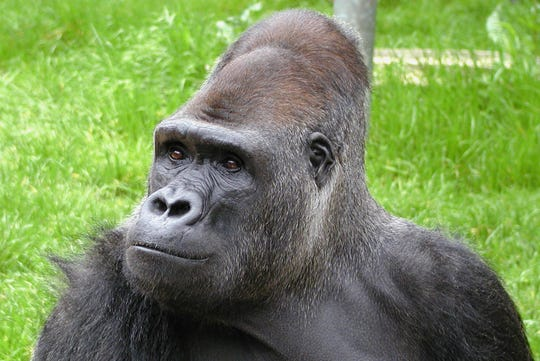
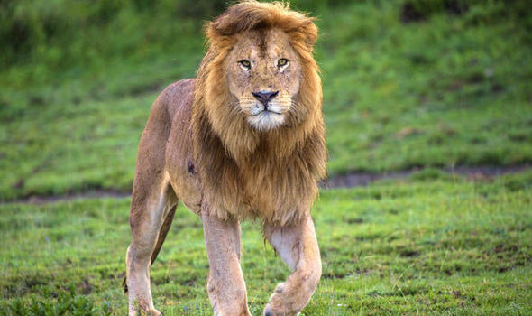
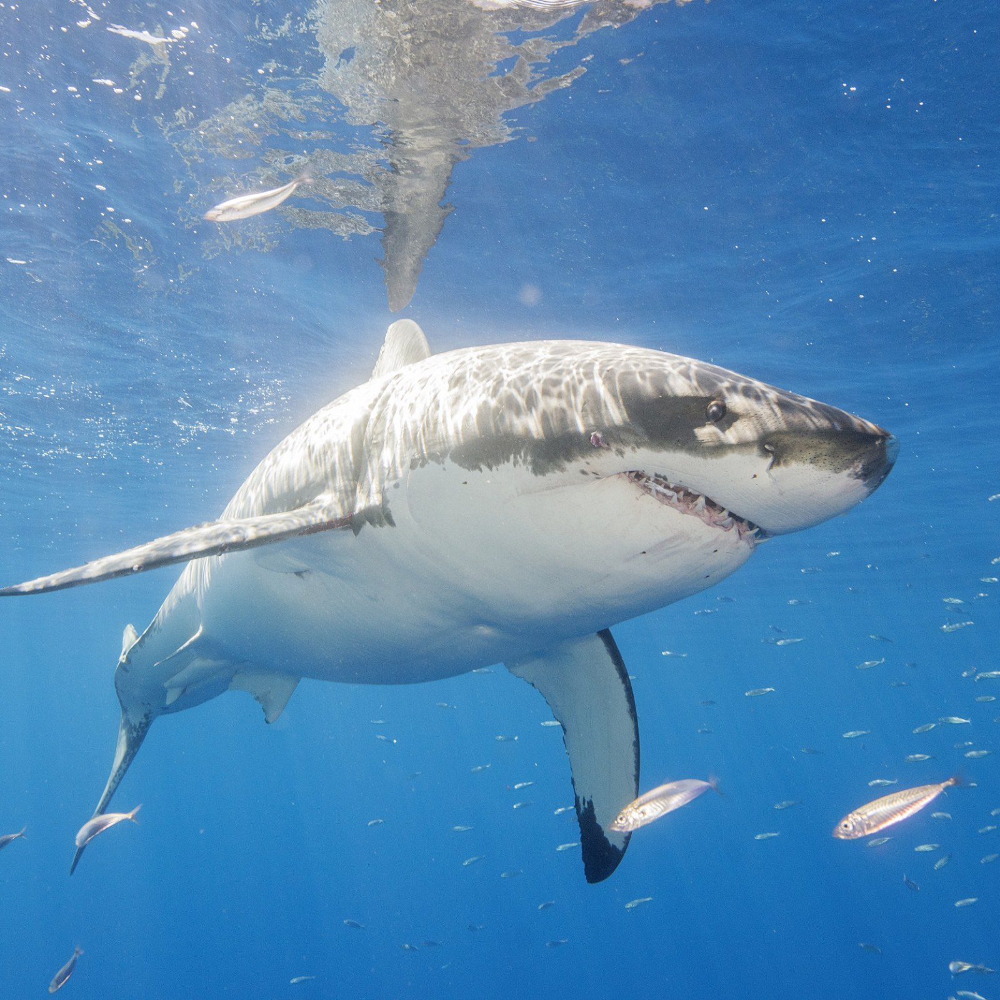

Animal Shelter
Adopt an animal below!

Harry the Gorilla
Harry here! I came to the shelter as a young gorilla and am now ready for my own journey in this world. I am a sweet boy and love to play and be fed. I have been hanging out in a foster home for awhile now and have to say that I love this indoor gorilla life. I get along well with other gorillas and am an all around great gorilla.

Simba the Lion
Meet Simba! My foster mom says I enjoy attention and will request it either by gently tapping you or quietly mewing at you. But don't get me wrong I'm not one of those needy cats - I can spend time by myself as well so I can keep your trusty chair warm while you are out and about! I am a good observer and will keep everything ship shape.

Bitey the Shark
Know someone crazy about sharks? Adoptions make the perfect gift! Well send them a jawsome adoption pack, so they can learn all about their shark.

Patsy the Penguin
People choose to adopt penguins for many reasons, from a souvenir from a visit with penguins to the perfect gift for a penguin lover to inspiring a new birder who likes penguins. But these symbolic adoptions also serve many useful purposes to help penguin conservation as well. While the way adoption funds will be used varies between different organizations, typical ways penguin adoptions can help support these flippered birds include: